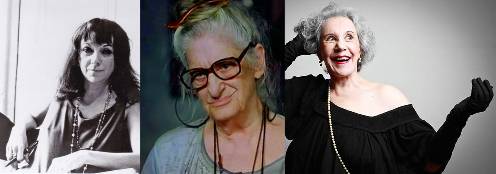

Mulheres PHODA do teatro.

Um dia eu vi uma entrevista no Programa do Jô (sim, faz tempo) com uma atriz que foi modelo. O negócio é que ela estava lá ridicularizando os cursos de teatro que fizera nos anos 1970, nos States (SIC). E sacaneou com o Living Theatre! Logo o avô do teatro alternativo, o pai do off-broadway, uma das grandes invenções do teatro estadunidense no século XX (houve teatro por lá antes do séc. XX?). Ficou um tempão fazendo piada dos exercícios, da pesquisa, das ferramentas de descoberta de uma nova cena, de um novo tipo de ator, mais corporal, por vezes mais visceral e talvez até menos técnico. Um ator criativo e, sobretudo, senhor da sua criação.
Ato contínuo, me lembrei da Judith Malina e do Julian Beck, fundadores do Living Theatre. Eles deram um curso aqui e eu fiz. Pra quem não sabe ou não lembra, a Judith Malina é a memorável vovó da Família Adams I. E o Julian todo mundo conhece como aquela figura assustadoramente magra no Poltergeist 2. Pois é... Eles revolucionaram o teatro – e principalmente o trabalho do ator para a contemporaneidade – e ficaram lembrados por esses dois filmes de segunda! São os mistérios da mediocridade, do lugar-comum, do esculacho que é a memória cultural de todo canto, em qualquer lugar. Pois não é que os ecos do Living Theatre (e também de Viola Spolin) chegaram até nós justamente naquele comecinho dos anos 1970 pela voz e pensamento da decana do Teatro do Orinitorrinco.
Entre nós, é inevitável não lembrar dela: Maria Alice Vergueiro, uma de nossas maiores vozes brechtianas (junto com Cida Moreira e Teuda Bara) que ficou conhecida pelo grande público brasileiro como a velhinha que andou dando uns tapas na Pantera! A Maria formou artistas, participou da montagem histórica de O Rei da Vela, no Oficina, fundou os dois núcleos do Teatro do Ornitorrinco, se apresentou por todo o mundo, fez cinema e até deu o ar da sua graça na TV. E fica reduzida a uma bizarra velinha maconheira!? Uma grande brincadeira, claro. Chiste que ela só topou graças à sua confiança na juventude e nas novas ideias no tempo que o Youtube era terreno baldio. Graças à sua maravilhosa loucura sã!
Em sua autobiografia não-autorizada, Maria diz: "Os artistas tendem a intuir o futuro, deixam o inconsciente livre, permitem o vir-a-ser. Isso me torna aventureira, sabendo que ninguém é dono de uma única verdade, e eu deixo fluir a minha intuição, gozo com ela principalmente quando encontro um outro que também embarca nessa... Percebo nisso um caráter espontâneo de solidariedade. Tudo já foi dito de outras maneiras. A gente, no máximo, pode reorganizar aquilo que já foi expresso. Dessa forma poderemos sempre completar o que o outro começou. O "ser mestre" é a gente começar a perceber que nossa vivência é mais épica do que psicológica. O ator é um privilegiado. A vontade de ser ator é o desejo de se desprender. Quem estiver numa boa escola ou grupo de teatro não precisa fazer terapia."
É a mesma loucura que movia a Myriam Muniz. Ela foi minha professora nos tempos de Macunaíma dos anos 1980. Um dia eu a vi, numa sala de ensaio da Funarte em São Paulo, protagonizar uma das cenas mais fortes e delicadas que já presenciei no ensino do teatro. Ela colocou um jovem ator em pé e disse pra ele com a sua voz italianadamente rouca, de quem fumava e bebia uma boa cervejinha... Ela disse: "eu vou fazer uma coisa com você e você reage". Daí ela pôs as mãos no peito do jovem e deu um empurrão. A reação dele foi apenas de afastamento, um passo pra trás. Ela deu um passo em direção a ele e deu outro empurrão. Novo afastamento. Isso se repetiu algumas vezes até que ela começou a bater o pé e o jovem começou a ficar acuado. Num dado momento, ele começou a correr em círculos e ela correndo atrás dele. Até que ela parou, virou-se e apenas esperou que ele viesse correndo até o seu encontro, completando o círculo. Nesse instante, diante do susto do aluno ao dar de cara com a mestra, ela o amparou e disse com a mesma voz, só que ternamente: "você só sabe fugir, né? Não precisa ter medo... isso aqui é só teatro... é tudo de brincadeirinha, bobo!"
Judith Malina, Maria Alice e Myriam Muniz... todas fundadoras, atrizes e diretoras de um teatro vivo, investigativo, instigante. Um teatro sem verdades absolutas, sem certezas. De onde brotam as dúvidas, de onde saem as respostas, de onde nascem as verdadeiras obras de arte e os grandes atores – e não a pasteurização dos enlatados. Um teatro de criadores e pensadores – artigo em falta nos nossos dias. Estive com elas em momentos diferentes de minha vida profissional e com cada uma aprendi coisas diferentes – e muito iguais.
Por essas e mais aquelas que prefiro não usar a palavra que arrepia – laboratório. Nunca usei. Sempre optei pelos termos ‘pesquisa, investigação, experimentação’. Um velho professor dizia mais ou menos assim: "nos anos 60 a gente fazia tanto laboratório... misturava os ingredientes, não anotava a fórmula nem as condições de experimentação... feito cientista maluco que, um dia, acaba mandando tudo pros ares!"